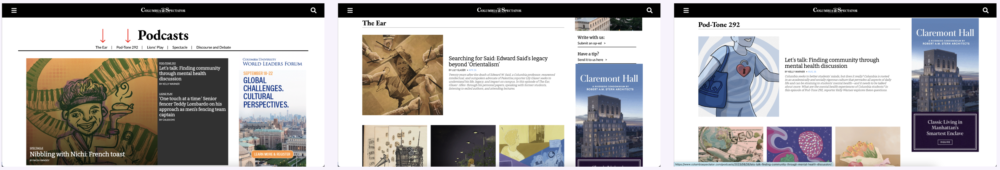
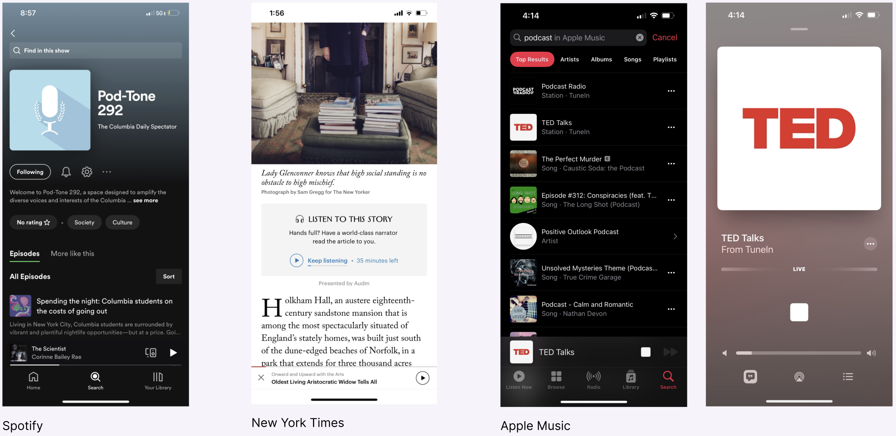
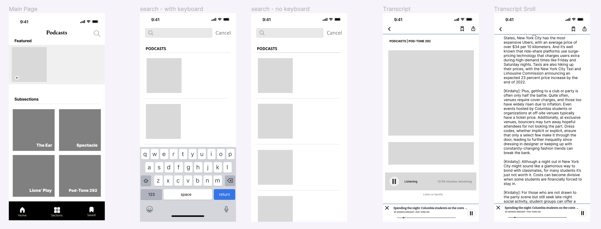
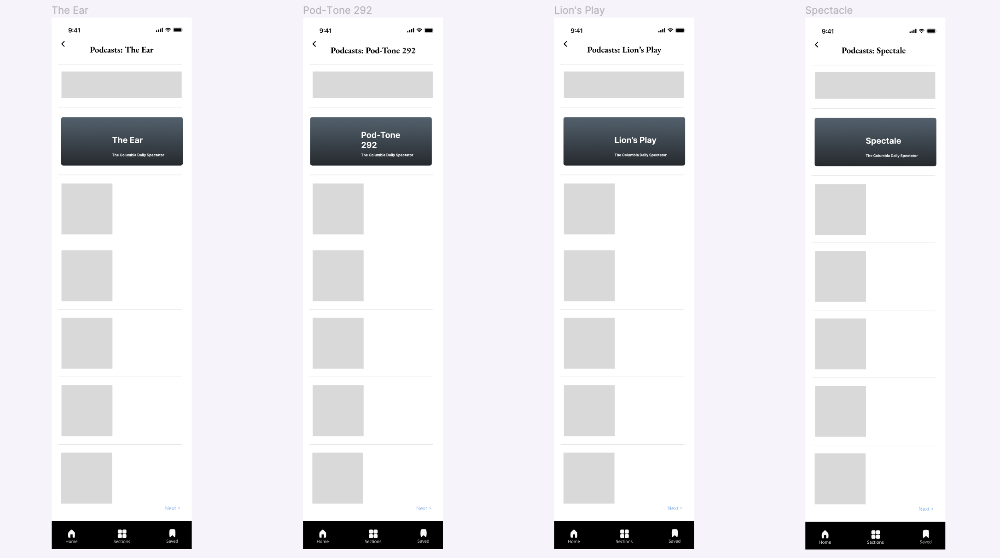

Columbia Daily Spectator App Design; Podcast Section
In this project, the Product Design team is transforming the existing Columbia Daily Spectator website into a mobile app. For this iteration, I managed the design and delivery of the Podcasts section, defining MVP scope, aligning editorial teams, and adapting the experience for small screens, while adding research-driven features to reduce friction and improve listen-through.
We wanted to answer this question:
“How do we ship a podcasts section of a news app that feels native on mobile while keeping consistent design with existing website?”
Goals
- Design a mobile interface that allows users to discover and play podcasts seamlessly within the app.
- Maintain brand consistency with the Spectator website while optimizing for small-screen navigation.
- Increase podcast listen-through and retention by reducing redirect friction to external platforms (Spotify).
Current Website Design
The current podcast section first shows a featured podcast. The website has five sections in the navigation bar: the first four are podcast sections and the last is a special edition page. Clicking on the sections with arrows leads to the two screens shown to the right.

Research
To shape the podcast experience, we ran a competitive analysis of Spotify, The New York Times, and Apple Podcasts and paired it with quick user interviews. A clear pattern showed up across all three: a persistent, bottom mini-player that keeps listeners in context. Our interviews also confirmed that redirecting to external apps was not prefered. Based on these insights, we prioritized an in-app playback MVP of the podcast (a mini-player with play/pause, skip forward, and rewind) to keep users on the page.

Design Opportunities
Homepage: This page showcases a featured podcast at the very top, along with by four organized
sections, offering users convenient podcast selection. Additionally, given our previously established Spotify page,
an accessible button can be provided for users to seamlessly transition to the Spotify platform.
Section Pages: Each section page has an informative section description at the top, followed by
a list of podcasts. To enhance user experience and minimize scrolling, a "Next" button facilitates navigation to more podcasts.
Transcript / Audio Page: A notable feature we aim to provide is the ability to enjoy podcasts
directly within the app, addressing the current limitation restricted to Spotify. This page incorporates a play
button at the top, initiating podcast playback. Furthermore, a sticky pop-up interface at the bottom allows users
to pause, play, skip forward, and rewind.
Search Page: Users can conveniently use the the search button to easily find a particular podcast.
Wireframe


Prototype

This is the prototype of the final design. The home page highlights a rotating featured episode and links to the four section pages. Each section page presents a short description followed by a list of episodes. Selecting an episode opens the transcript/audio page with in-app playback and a mini-player for controls. Save and share actions are available at the top right.